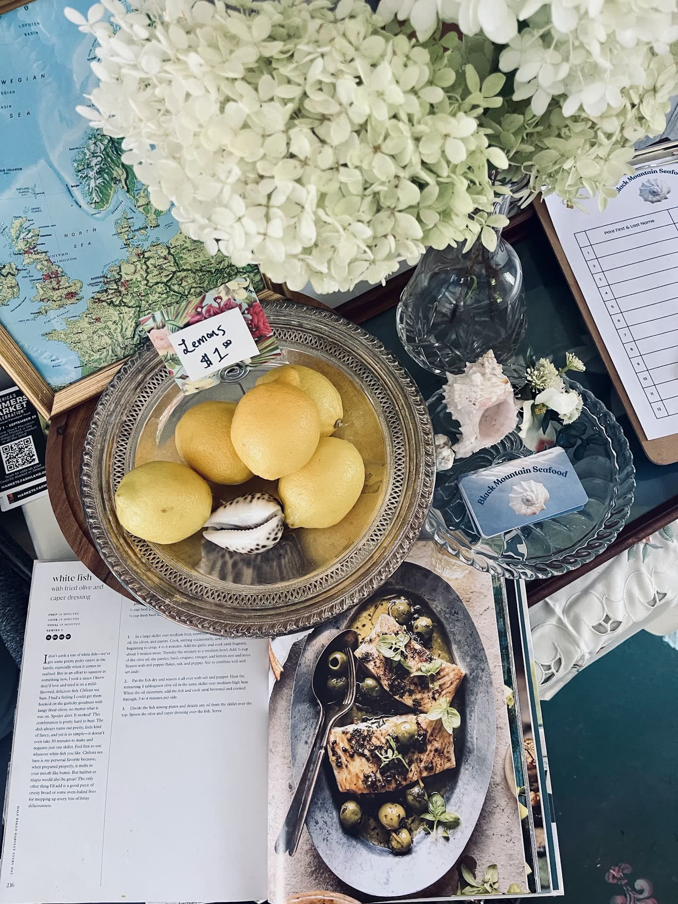

Cook it like you caught it.
Whenever someone asks “what's your best fish fry recipe?” we send them here. Tap a card for the full recipe, check off ingredients as you shop, and scale it for your crew.
Three things that make any recipe better.
Cook it soon
Fresh fish is best within a day or two. Keep it in the coldest part of your fridge, ideally on ice, until you're ready to cook.
Pat it dry
Moisture is the enemy of a golden crust. Pat fillets and scallops dry with a paper towel right before they hit the pan.
Don't overcook
Fish keeps cooking off the heat. Pull it the moment it flakes or turns opaque, and shrimp the second they curl into a C.
Not sure what to do with this week's catch? Email us, call (828) 417-1057 or just ask at the counter. We love helping figure out dinner.

Got a favorite? Add it to the book.
There's a recipe book in the shop where customers write down their favorite seafood recipes. Bring yours by on a Friday or Saturday, or email it over, and it might end up on this page too.